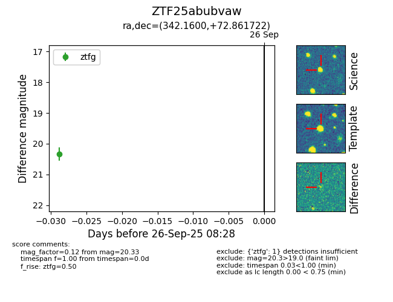

FINK: ZTF25abubvaw
Lasair: ZTF25abubvaw
ALeRCE: ZTF25abubvaw
ZTF25abubvaw (ztf,fink)
equatorial (ra, dec) = (342.1600,+72.86172)
galactic (l, b) = (114.0799,+12.13582)

last ztfg=20.33
1 ztfg detections